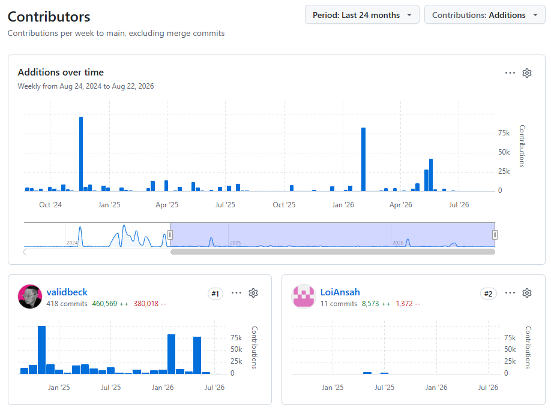

ValidMind Jupyter Notebooks
Developer Content
Jupyter Notebook use case demonstrations written for ValidMind’s Python library.
Samples
Engendering empowered users through effective guidance content.
Along with a love of gratuitous alliteration, I truly enjoy authoring user guidance content. That’s because I believe that great guidance content empowers users, and empowered users get excited about product.
I was the sole Senior Technical Writer for ValidMind, a generative artificial intelligence financial services startup, where I employed docs-as-code methodologies alongside software engineers delivering documentation as part of product in the same development ecosystem, transforming a minimal set of user guide drafts into a fully idealized and comprehensive knowledge base.
As I authored the bulk of 53% of user content out of many contributors,1 most of ValidMind’s documentation saw my influence at some point. I’ve selected some of my best work to showcase below:
1 Citation: validmind/documentation statistic archive

Atryum is an open-source agentic orchestration tool developed by ValidMind. As ValidMind’s sole Senior Technical Writer, I was responsible for almost all of the documentation for Atryum.
I authored approximately 95% of the content for Atryum,2 including the samples selected below:
2 Citation: validmind/atryum/website (documentation) archive
Before we had any formal technical writers at SaaSquatch, a B2B affiliate software startup, I created and maintained company-wide technical process, product and installation documentation. Using Contentful and a bit of cobbled together code, I overhauled our public knowledge base with a focus on accuracy, client accessibility, increased internal ease of upkeep, and future extensibility.
While the following samples are quite dated before I refined my voice in an official technical writing role, I’ve included them for completion and progression value: